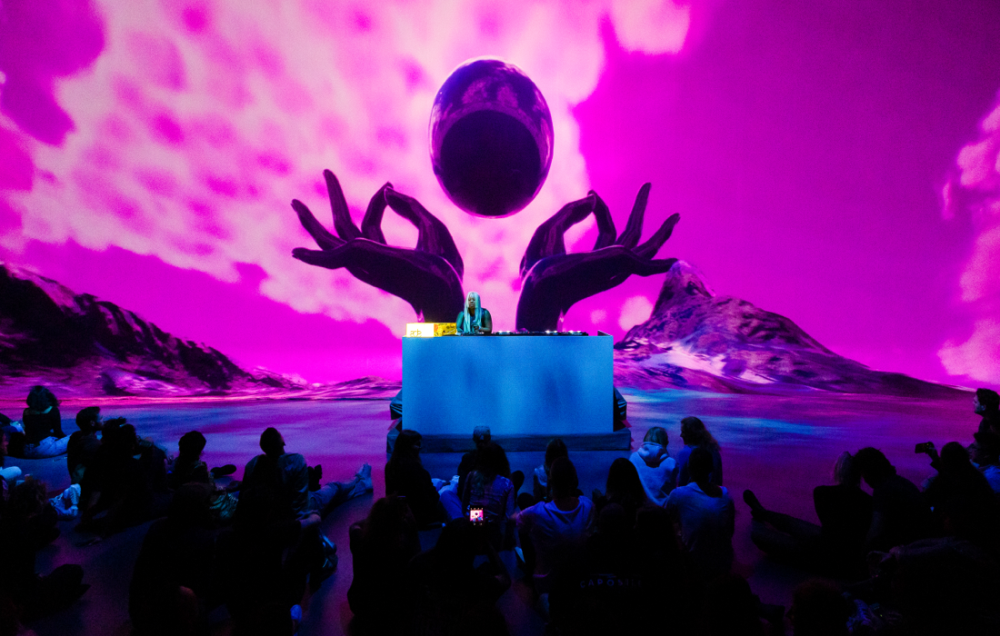
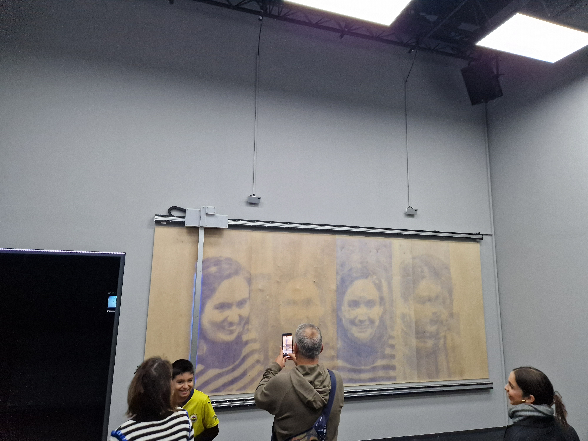
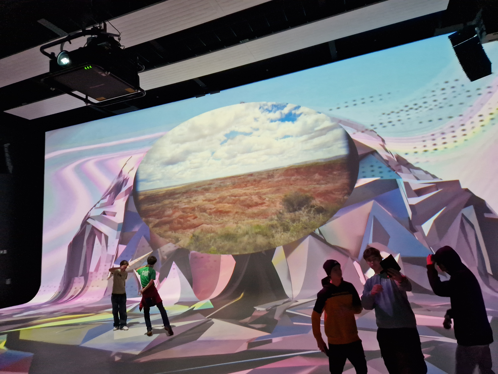
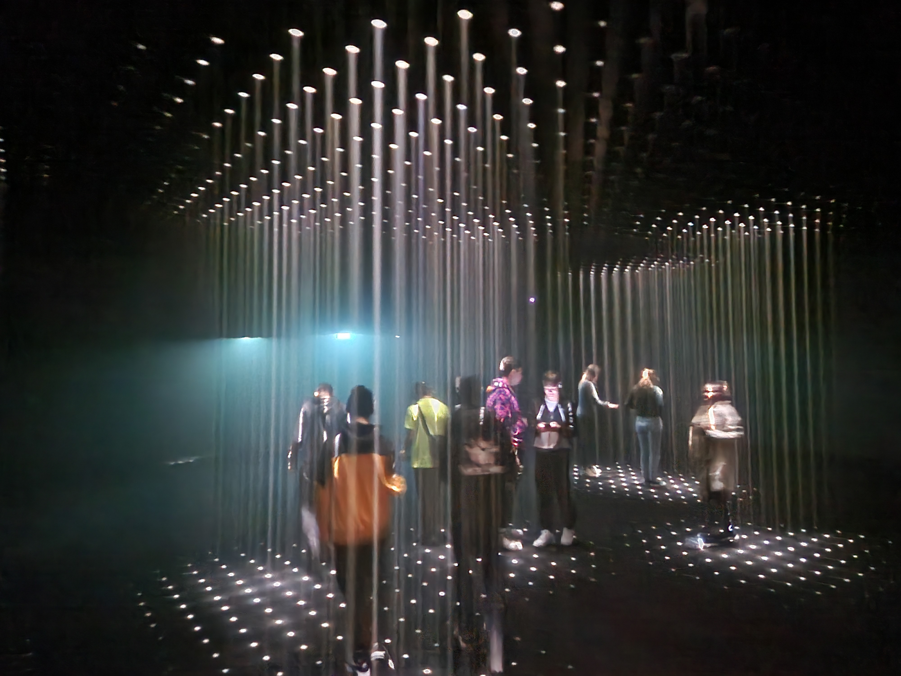

NXT Museum
The home of new media art. Discover large scale, multi-sensory exhibitions which challenge assumptions and open minds. We seek, show and question what is Nxt.
   Geschiedenis
Het Nxt Museum in Amsterdam is een innovatief museum dat de bezoekers meeneemt op een unieke ervaring waar kunst, technologie en wetenschap samenkomen. We exposeren kunstwerken die gebruik maken van moderne technologieën van heden en van de toekomst. Het Nxt Museum biedt een boeiende en hedendaagse kijk op de rol van technologie in de kunstwereld.
Geschiedenis
Het Nxt Museum in Amsterdam is een innovatief museum dat de bezoekers meeneemt op een unieke ervaring waar kunst, technologie en wetenschap samenkomen. We exposeren kunstwerken die gebruik maken van moderne technologieën van heden en van de toekomst. Het Nxt Museum biedt een boeiende en hedendaagse kijk op de rol van technologie in de kunstwereld.
wat is er te zien
Random international Vanaf 27 september is het mogelijk om de creaties van de postdigitale kunstenaarsgroep Random International te bewonderen in het Nxt Museum. De expositie onthult zowel recent voltooide kunstwerken als stukken die voorheen nog nooit in Europa zijn tentoongesteld. Daarnaast geeft het een inkijkje in het creatieve traject van de kunstenaars, van 2006 tot aan de huidige datum.
Reviews
Roos
Een prachtige tentoonstelling met nieuwe media. Geschikt voor alle leeftijden. Wij gingen met een groep leerlingen van de bovenbouw middelbare school. Aandacht wordt vastgehouden. Veel interactie tussen de kijker en de kunst dmv lampen en beweging. Indrukwekkende projecties en interessante onderwerpen. Zeer aan te raden! (tijdsduur: Als je snel loopt ben je er in een half uur doorheen. Als je alles in je opneemt kan je er een uur over doen).
Naomi Toure
Een bijzondere en interactieve manier om een museum te ervaren. De living room is echt een geweldige experience. Je verbaasd je wat allemaal mogelijk is met digitale kunst. Ik zal zeker nog eens gaan!
Jose Angel Gonzalez
We were expecting interactive and creative tech expositions. There is just one room that i enjoy. Doesn't worth the money.